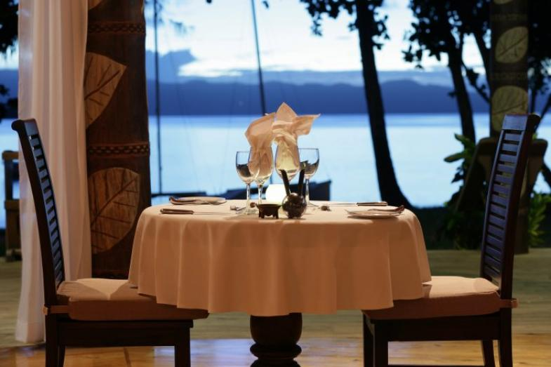

A boutique adults only resort offering snorkeling, scuba diving, sailing, fishing, kayaking, hiking, private picnics, cultural tours and excursions, fine dining and spa services. Meal Inclusive and Meal Exclusive rates available.
TreeHouse-surrounded by lush tropical foliage and yet only steps from the beach, our three Treehouses are unique to Bahari island resort. *850 square feet *air conditioning *large private sun deck *outdoor lava rock shower *outdoor jacuzzi *private king day bed *sun-lounges *bath robes & slippers *pure fiji bath amenities *hair dryer *ipod docking station with clock *in-room electronic safe *celing fans *beach towels *daily supply of freshly baked cookies *mini bar on request *french press coffee & tea making facilities
BEACHFRONT BURE - Our five Beachfront Bures have been carefully designed to create a balance between nature and contemporary elegance. *750 square feet *air conditioning *outdoor lava rock shower *bath robes & slippers *pure African bath amenities *hair dryer *ipod docking station with clock *in-room electronic safe *celing fans *beach towels *daily supply of freshly baked cookies *mini bar on request *french press coffee & tea making facilities
OCEANVIEW BURE - Our three Oceanview Bures provide simplistic island flavour with all the modern luxuries that Bahari Island resort has to offer. *650 square feet *air conditioning *outdoor lava rock shower *bath robes & slippers *pure African bath amenities *hair dryer *ipod docking station with clock *in-room electronic safe *celing fans *beach towels *daily supply of freshly baked cookies *mini bar on request *french press coffee & tea making facilities
TWO BEDROOM BURE - Sitting on its own private point only steps from the ocean, our Two Bedroom Bure is the largest of our accommodation. It is ideal for a family (minimum age 16 years) or couples traveling together. 1600 square feet *air conditioning *outdoor lava rock shower *bath robes & slippers *pure African bath amenities *hair dryer *ipod docking station with clock *in-room electronic safe *celing fans *beach towels *daily supply of freshly baked cookies *mini bar on request *french press coffee & tea making facilities